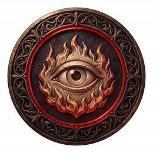
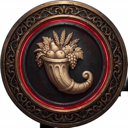
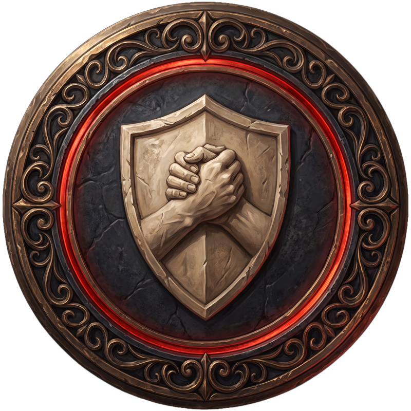
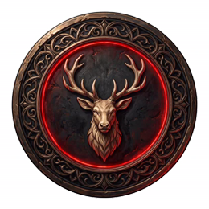

Vlam van
Waakzaamheid
Scherp en sluw: niemand mag het doorhebben. Volbrachte quests hierin.

Hoorn van
Overvloed
Drank, lof en eer, alles te veel. Volbrachte quests hierin.

Schild van
Broederschap
Samen, regels, de groep als één. Volbrachte quests hierin.

Hart van
de Ardennen
Verhalen, legendes, wie we zijn. Volbrachte quests hierin.